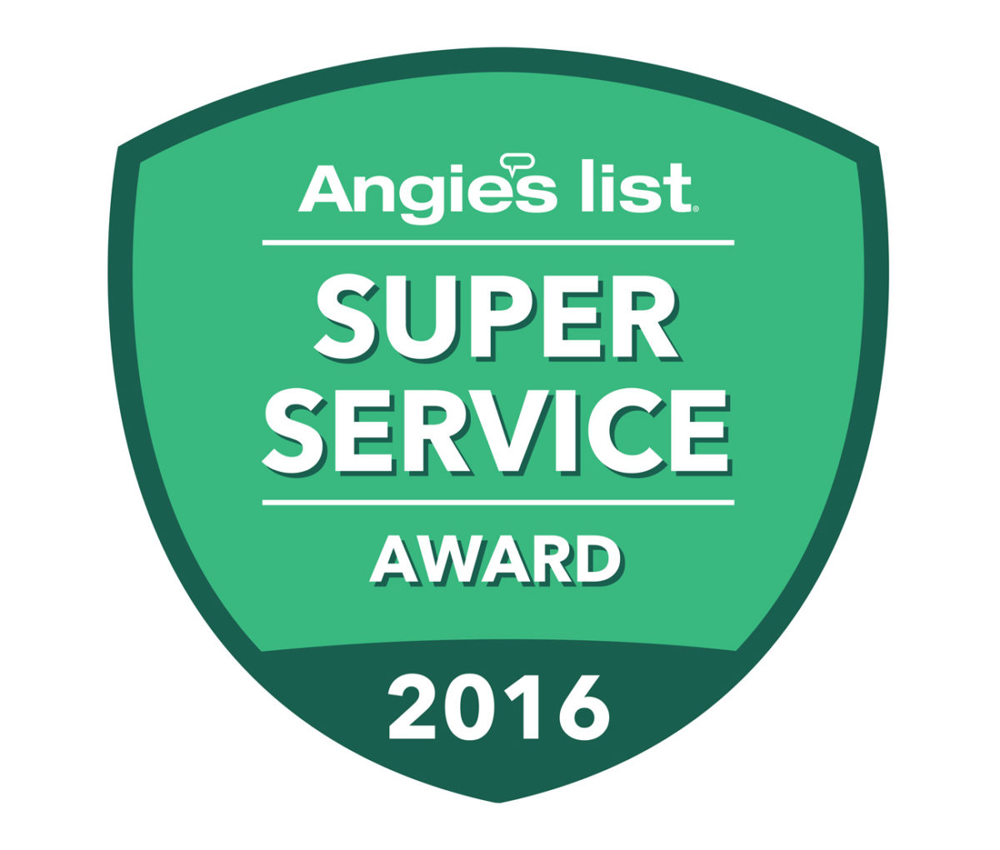
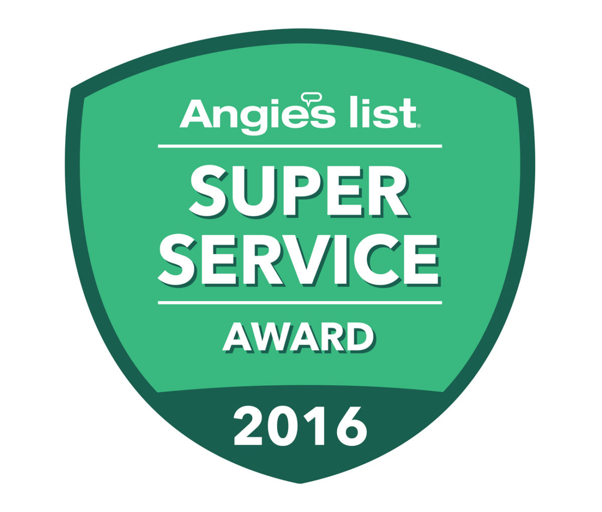

Awards
Once Again Geofreeze Earns Coveted Angie’s List Super Service Award
Geofreeze has been twice awarded the prestigious Angie’s List Super Service Award, an honor bestowed annually on approximately 5 percent of all the businesses rated on the nation’s leading provider of consumer reviews on local services.
Geofreeze Elevated to Alexandria Business Hall of Fame -- Engineers and Foundation Contractors
Geofreeze Inc. is among a very small group of companies that have won the Best of Alexandria Award for several consecutive years. This distinction has qualified Geofreeze Inc. for the Alexandria Business Hall of Fame. The Alexandria Award Program is an annual program honoring the achievements and accomplishments of local businesses throughout the Alexandria area. Recognition is given to those companies that have shown the ability to use their best practices and implement programs to generate competitive advantages and long-term value for their clients.
Best of Alexandria Award - Foundation Contractors
Geofreeze has been selected for the Best of Alexandria Award in the Foundation Contractors category by the U.S. Local Business Association (USLBA).
The USLBA "Best of Local Business" Award Program recognizes outstanding local businesses throughout the country. Each year, the USLBA identifies companies that they believe have achieved exceptional marketing success in their local community and business category. These are local companies that enhance the positive image of small business through service to their customers and community.
Testimonials
Foundation Underpinning & Site Drainage Improvements
I had a number of companies come out and inspect my home in 2012 after I noticed severe drywall cracks in the 1990 addition to the original 1964 home and stairstep cracking in the bricks of the original house. I was very impressed with Geofreeze's inspection, Mr. Schuster took the time to show me what was going on (typical Virginia clay soil shrinkage tilting down the back part of the addition foundation, exacerbated by very poor to nonexistent drainage on one side of the addition.) What really impressed me is he said I didn't need to do the work, the house was structurally sound, although shrinkage and compression of the soil would continue over the decades. However if we wanted to sell the house a buyer would probably want the work done. He broke down suggested work into three priorities, with the drainage being the most important. It impressed me that he was honest about the work not being necessary for safety and taking the time to explain everything to me. We decided for a number of reasons to have the work done in 2013.
It took about two weeks to do the work, and they did a great job. His crew is wonderful, very experienced and very hardworking, and no subcontractors which is important to me, everyone works directly for Geofreeze. They had engineers out at various points in the process to inspect what the crew was doing and make sure everything was running smoothly. They ran into a problem with the sloping on the drainage system, and changed the plans to make sure the resloping would correctly funnel the water into the drains. It looks better than before they started! I added rebricking of two old basement windows (that opened into storage closets) to the work order and they did a beautiful job, you can't tell a window was ever there.
Foundation work is not a do-it-yourself project. You need an experienced firm that knows what they are doing. I would strongly recommend Geofreeze for foundation work.
 Maureen Muncy
Maureen Muncy
Marc Lederman: Masonry Wall Reinforcement
Our perimeter foundation in the lower level of our home is concrete block in a nearly 50 year-old house. That wall is set in the ground and the home had experienced some movement in that wall across the entire back of the house over the years. We noticed some of this when we were looking at the house to purchase through the exposed wall in the garage and our initial assessment before purchase was that this was a long-term issue due to the way in which the backfill was done during the home's construction. At the time of purchase we had horizontal cracking only with very little movement in the wall. But over the 20 years we have lived in the home the damage had become somewhat more pronounced, including movement of the wall (approximately an inch and-a-half) in the corner of the garage with a vertical crack from joist to floor that allowed water to leak into the garage whenever we had a reasonably heavy rain.
Through Angie's List I came across Geofreeze as a professional and skilled firm with an excellent reputation. I was looking for a firm with a professional engineering team, experience across the broad spectrum of needs in our area, and a firm with an in-house crew to actually do the work.
John Shuster came out to take a look at our problem and I was impressed with his professional demeanor and the way in which he assessed our problem. The issue was water seepage into the soil creating an abnormally high saturation of the soil and excessive hydrostatic pressure again the basement wall.
A few days later I had a written assessment and an estimate for the repair and decided to have Geofreeze do the work. The solution was to place vertical steel reinforcements and non-shrink high strength cement grout in-fill into the hollow masonry. Additionally, vertical carbon fiber straps were placed every 4 inches along the inside of the garage wall. Also, a narrow structural steel header was bolted into the existing first floor joist system and the entire wall and adjoining wall sealed/painted with Dry Lock.
My experience with Geofreeze was excellent. From my first contact with John to the work conducted by the repair crew, to continued enjoyment of our dry basement. I have continued to be pleased with the way in which the repair has been effective in arresting the wall movement, stopping the water from entering, and the impressive way the repair looks, it is difficult to tell that there was ever a problem.
I highly recommend John Shuster and Geofreeze for the array of services they provide and the excellence of their work.
Drainage Improvement
What an absolute JOY to walk downstairs this AM and see a DRY living room!!
Thank you, thank you, thank you.
After 10 long years of dreading any forecast that included rain... I am just beginning to allow myself to remember what a blessing the sight and sound of rain can be.
Every step of this process, every encounter with Geofreeze employees has been professional, timely and "serviced" with a genuine smile and caring presence.
 With gratitude,
With gratitude,
 Sue
Sue
Earth Anchored Basement Wall Repair
We contracted with GeoFreeze upon the enthusiastic recommendation of two other clients one with a big retaining wall project, and one with a complete foundation repair.
The estimate appointment went very smoothly, and the estimate we received was clear and thorough. We ended up waiting quite a while to have the work done, but the original estimate was honored.
The job itself went incredibly well. The crew arrived promptly and was thoroughly professional. The job was done well, as far as I can tell with my layman's eye ' it's now four years later, and everything still looks perfect. During the installation, the crew went way above and beyond the call of duty, completely cleaning out a downstairs storage room adjacent to the job and installing plastic to contain falling insulation. The room, as well as the entire area, was spotless when they left.
GeoFreeze is not the cheapest contractor, but in this case you really get what you pay for, and then some. They are truly professional structural engineers who know what they are doing and conduct themselves with the utmost professionalism. I would use them again in a heartbeat.
I affirm that Geofreeze, Inc. provided the services described and that I authorize publishing my comments on the Geofreeze website.
 Jennifer Guernsey
Jennifer Guernsey
Concrete Floor Releveling
I am writing this letter to tell you how enamored I have been with Geofreeze and the professionalism of your employees. This professionalism started with my initial inquiry about having my basement slab raised. You were very courteous and helpful in our initial conversation and I immediately knew your company would do a good job.
The structural engineer came to my house to evaluate the problem. He was very knowledgeable and friendly. He explained what had to be done in terms that I could understand and put me at ease for taking on this project. I appreciated his knowledge and years of experience. Once again I knew that I had selected the right company for doing this job.
The work crew that did this job was extremely professional. I was impressed with their work ethic and the respect that they showed for me and my home. I have found that in today's times many workers seems to do the job just for a paycheck and it was wonderful for me to see that this was not the case with your employees. They were dedicated and professional. They did not mind me watching the process and were always willing to let me watch and they answered any of my questions in a courteous and professional manner. Please pass on my appreciation for the great job they did. I would share with any residential customer my experience and how well the men kept the job site neat and clean and protected my house from any mess. When the time came to raise the slab I watched the process and was awed by how the slab was fully put back in place and stabilized.
In conclusion I again want to say thanks for doing a wonderful job, the professionalism of all involved and the peace of mind that you have given me.
 Edward Lewis
Edward Lewis
Foundation Underpinning and Basement Wall Reinforcement
I want to commend Geofreeze's workers. I never saw ANYONE work as hard and responsibly as Geofreeze's crew members. They left no stone unturned to do the job right and were very responsive to my needs and questions. They worked well together and were very upbeat and pleasant all during the week. A homeowner goes through a certain amount of stress when her house and yard are being torn up and people in and out on many days. The crew's attitude made that process a LOT easier for me. From this homeowner's point of view, they are surely commendable.
 M. Binney
M. Binney
Crawl Space to Basement Conversion and Interior/Exterior Drainage Improvement
Geofreeze previously created a large expansion of our basement by converting an existing crawl space to a full depth basement. More recently, they addressed a problem in our original basement. The basement areaway drain had deteriorated causing flooding during heavy rainfall. Geofreeze installed a new sump pump and collector drain and made the interior and exterior connections. Once again, they did a great job!
 Valerie and Lynn Bast
Valerie and Lynn Bast
Basement Wall Reinforcement and Drainage Improvements
We had a water problem in our basement caused by poor storm water diversion at one end of the house and two of the basement walls had cracked. Geofreeze reinforced the walls and improved the drainage. We are very pleased with the work. The crew was courteous and hard-working!
 John Maruschak
John Maruschak
Structural Renovation and Repair of Basement
The masonry basement walls and concrete floor of our home were badly cracked. We experienced chronic water problems in the basement. Geofreeze reinforced the walls, replaced the floor and added drainage improvement. They then finished the basement wall framing, ceiling and electrical work, leaving it ready for us to finish the new living area. Their crew was courteous and professional. They, together with Geofreeze's engineering staff, addressed situations promptly and efficiently.
 Deb Lopere
Deb Lopere
Foundation Underpinning Repair and Drainage Improvements
My introduction to Geofreeze was a very comprehensive article in the Washington Post's Real Estate section that reviewed specialized restorative work for homes, no matter the cause. Geofreeze was identified as the company that had the full resources to evaluate, solve, strategically plan and actually do the work'all within the disciplined Geofreeze culture of dedication to excellence. My experience verified, with distinction, the entire range of services portrayed so favorably for Geofreeze. The Washington Post subsequently had an additional article that was a recapitulation of a Geofreeze home restoration in Chevy Chase. The Geofreeze company team applied the above-mentioned positive skill sets to the project at my home. As the work proceeded there were challenges that were not anticipated, including 85 days of rain out of 100 days. Geofreeze adjusted for the interruptions and never wavered encountering unforeseen problems on the job site. Technically and clinically all companies aspire to do work. The real appreciation to Geofreeze is the extra comfort to the client embedded in the company culture that was demonstrated by Geofreeze - for applying the ethic of integrity, loyalty and high caliber applications from the entire ranks of the Geofreeze staff.
 Richard Norman
Richard Norman
 
